|
|
|
In the section 5.2.2.2, we have seen that the support of a realizable spatial 3D distribution may be based on two elements: the volume quantum and the volume element. In case of the ensemble motion of the distribution, its inner T reference (if this reference however exist, precisely in case of some S or L-type relations between the distribution’s elements), with the position vector 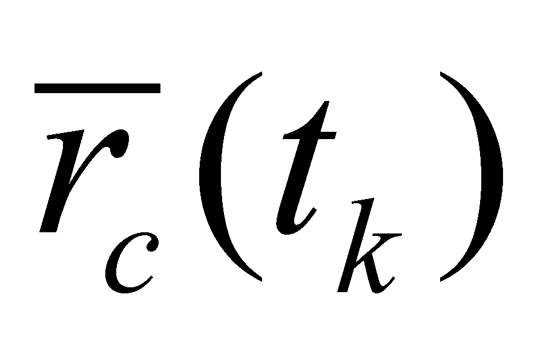 against an outer T reference, it shall have a translation motion with the velocity 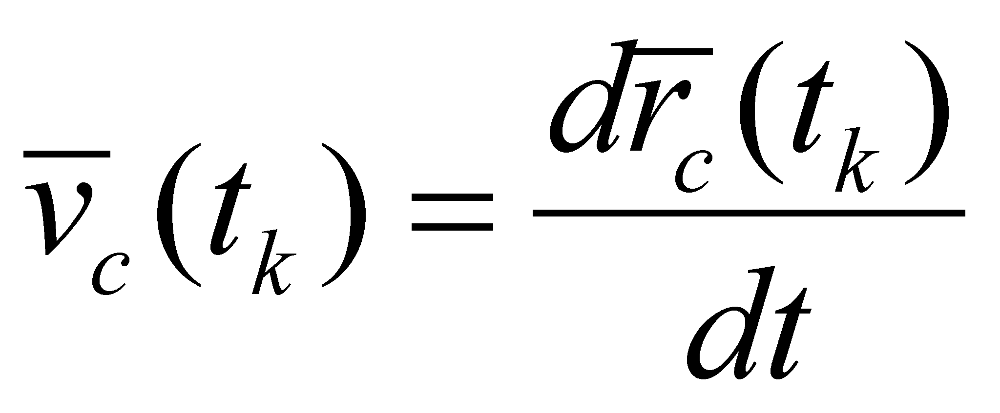, motion which shall be evenly transmitted to all the distribution elements. In such conditions, the stockpile quantum given by the relation 5.2.2.2.1, with the external position 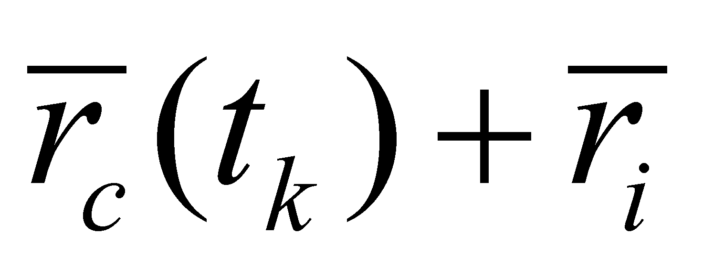, would be moved with the velocity 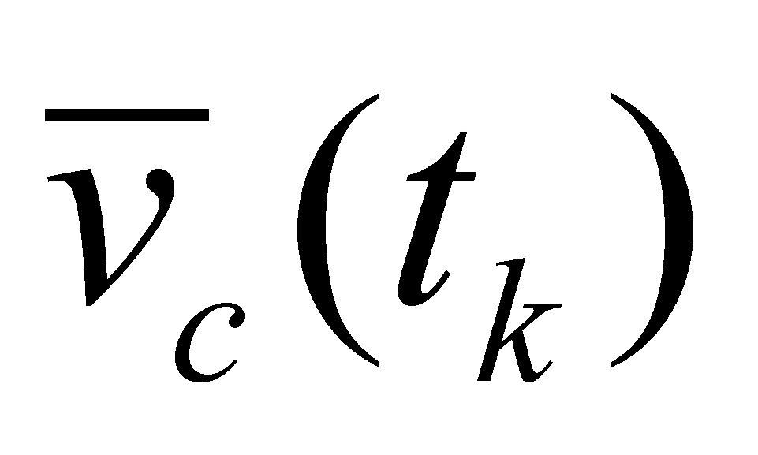, resulting a flux quantum:
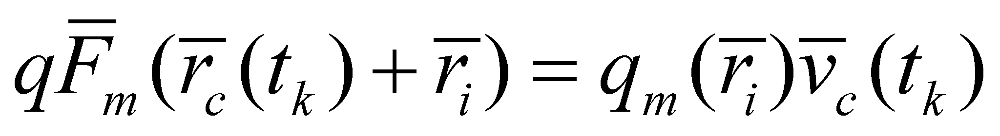 (5.2.2.4.1)
Because the flux quanta represents the motion of a 3D DP, on which the quantum 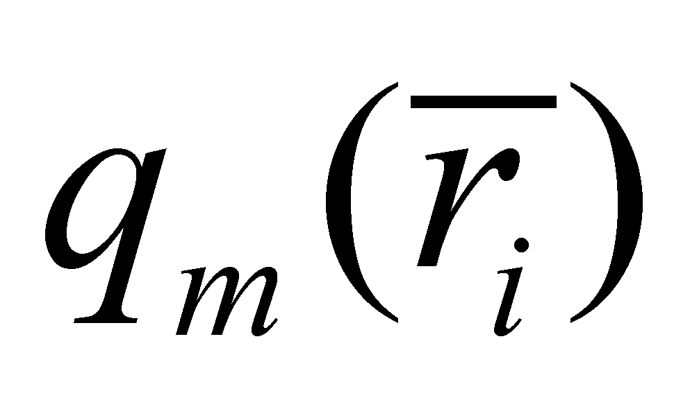 is evenly distributed, otherwise speaking, the motion of a realizable “material point”, the vector 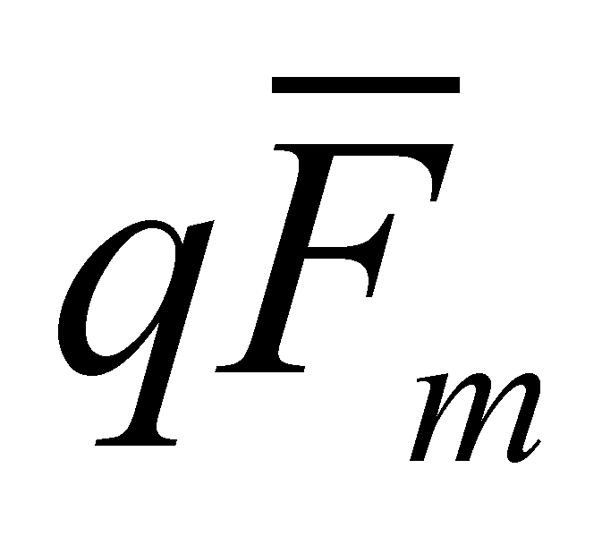 is also called flux quantum vector (FQV) in this paper, and it is the realizable version of FDV from the virtual model.
If it is taken into account the motion of an elementary quantity given by the relation 5.2.2.2.2, we shall have an elementary flux:
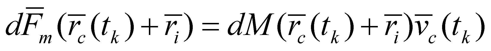 (5.2.2.4.2)
Comment 5.2.2.4.1: Within the relations 5.2.2.4.1 and 5.2.2.4.2, there is a series of states S0(t) (samples of the spatial positions of a distribution element 5.2.2.1 or 5.2.2.2), taken at the moments 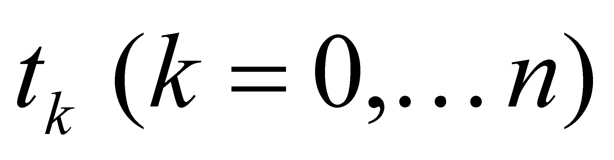, which t0 is the moment of the flux initiation. The sampling interval (period) is dt, so that the velocity (temporal density of the motion process) could be considered constant on its duration.
Attention! Within the relations 5.2.2.4.1 and 5.2.2.4.2, the objects 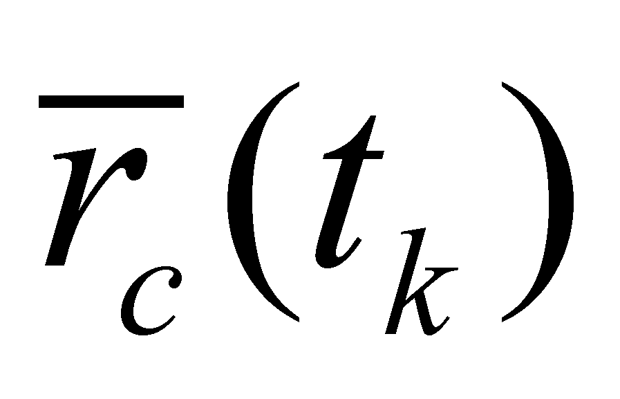 and 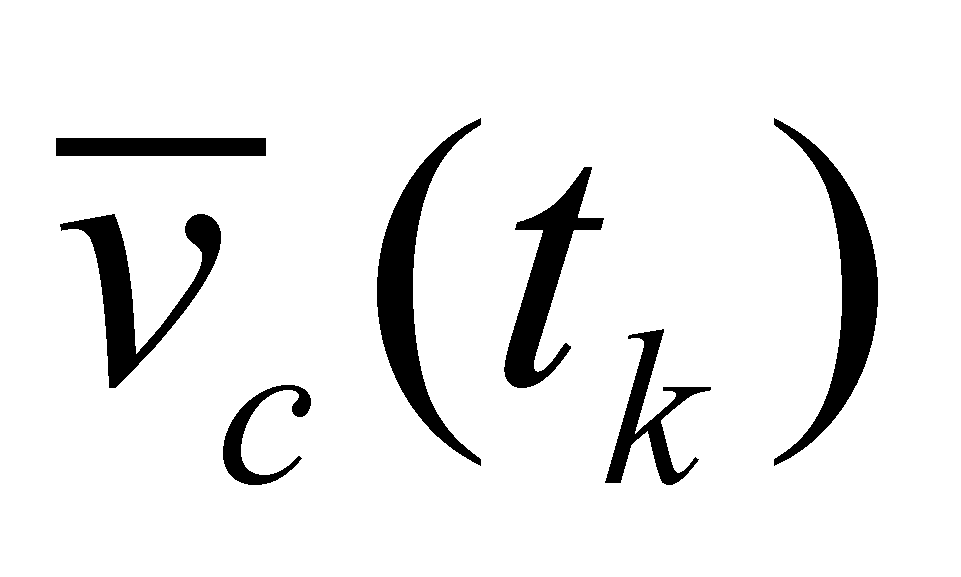, although they have the same temporal reference tk, they do not have a simultaneous existence but, as it is mentioned in annex X.6, their support temporal ranges are adjacent but also disjoint. For , the moment tk is included in the support range, whereas for , the moment tk is not included, that is a right asymptotic boundary.
The main feature of both types of flux elements is that the FDV distributions are even on their support elements. In case of the vectorial distributions, the technico-scientific literature uses the term of resultant vector, an abstract object which is substituted to a set of vectors through a single one, with a significant decrease of the information amount which needs to be processed. In case of the vector equipartitions, the resultant vector shall be a vector with the same direction with the represented vectors, and the modulus shall be equal to the sum (integral) of all these vectors. As regards the relations 5.2.2.4.1 and 5.2.2.4.2, the vectors and 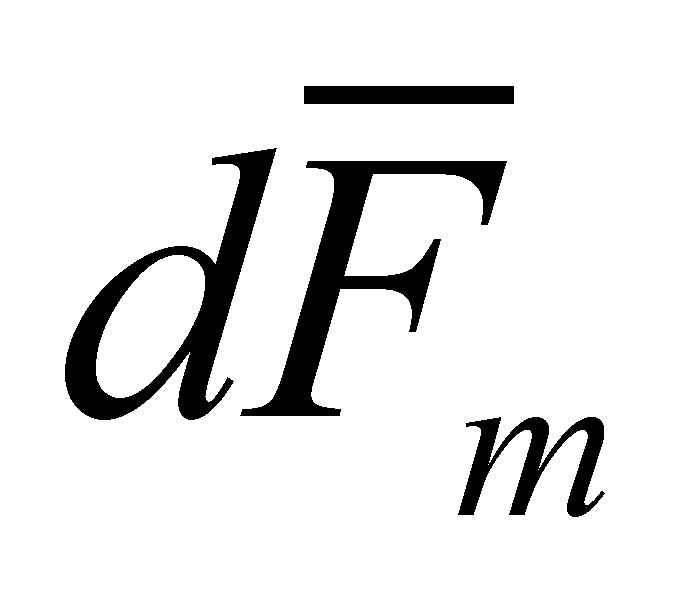 are even those vectors coming from the integration along the volume quantum or along the elementary volume of FDV. The application point of these resultant vectors is the inner T reference of the elementary object.
Similar with the case of the flux virtual model, the objectual model has also two study methods of flux :
Study on the motion of a single object involved in flux (Lagrange method);
Study on the global spatial distribution of the vector field at a certain tk moment (Euler method).
The distributions 5.2.2.4.1 and 5.2.2.4.2, are distributions with temporal support of the spatial position of inner T reference of a spatial distribution element belonging to the amount M. Therefore, these are Lagrange distributions, trajectory of a single elementary object set in motion. Just like in the virtual model, this kind of pathway is a flux line (or a flow line). The set of all the flux quanta 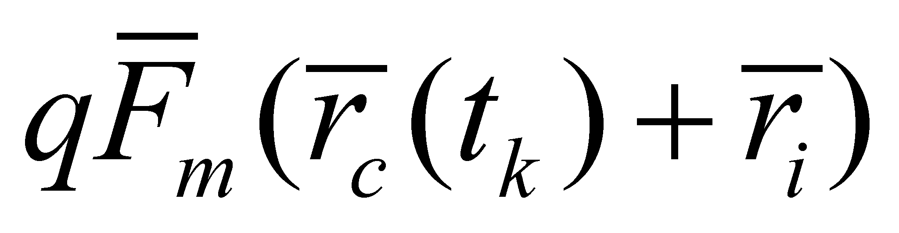 or of the elementary fluxes 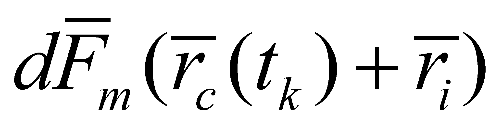 existing at a single tk moment makes-up an overall state of the flux of amount M at that moment, that is a vector field which was called an Euler distribution.
Copyright © 2006-2011 Aurel Rusu. All rights reserved.